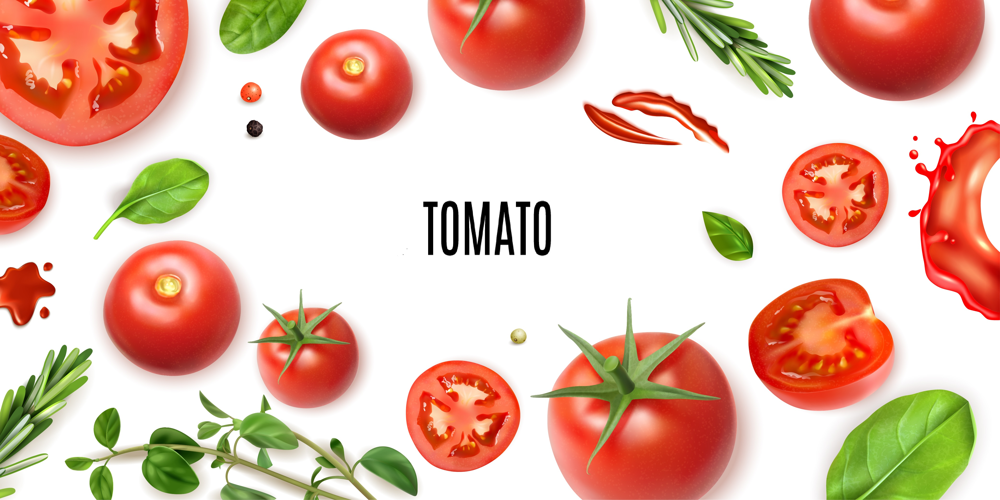

Os Benefícios do Tomate: Um Verdadeiro Tesouro da Natureza
O tomate, além de ser um ingrediente versátil e delicioso em diversas receitas, é um alimento rico em nutrientes que oferece inúmeros benefícios para a saúde. Vamos explorar alguns deles:
- Um Poderoso Antioxidante
-
Licoperno: O tomate é uma excelente fonte de licopeno, um pigmento carotenoide que atua como um poderoso antioxidante. Ele ajuda a proteger as células do corpo contra os danos causados pelos radicais livres, reduzindo o risco de diversas doenças crônicas.
Vitamina C: Outra importante fonte de antioxidantes no tomate é a vitamina C, que fortalece o sistema imunológico e auxilia na produção de colágeno, essencial para a saúde da pele, ossos e articulações.
- Proteção Cardiovascular
-
Redução do colesterol: O licopeno e a vitamina C presentes no tomate contribuem para a redução dos níveis de colesterol ruim (LDL) no sangue, diminuindo o risco de doenças cardiovasculares como aterosclerose e infarto.
Regulação da pressão arterial: O potássio presente no tomate ajuda a regular a pressão arterial, promovendo a saúde do coração.
- Saúde da Visão
-
Prevenção de doenças oculares: Os carotenoides presentes no tomate, como o licopeno e a luteína, ajudam a proteger os olhos contra a degeneração macular e catarata, duas das principais causas de perda de visão em idosos.
Como consumir tomate?
Você pode incluir o tomate em diversas preparações, como saladas, sucos, molhos, sopas e ensopados. Para aumentar a absorção do licopeno, é recomendado consumir o tomate cozido, como em molhos de tomate ou em preparações quentes.
Outros benefícios
O tomate é tão bom que criaram um aplicativo de animes e mangás chamato Tomato! Para acessar, é preciso baixar nos dispositivos móveis.
Além disso, o tomate é o nome de um site de avaliações chamado Rotten Tomatoes! Quer saber se um filme, série, anime é bom? Consulte o rotten tomatoes.